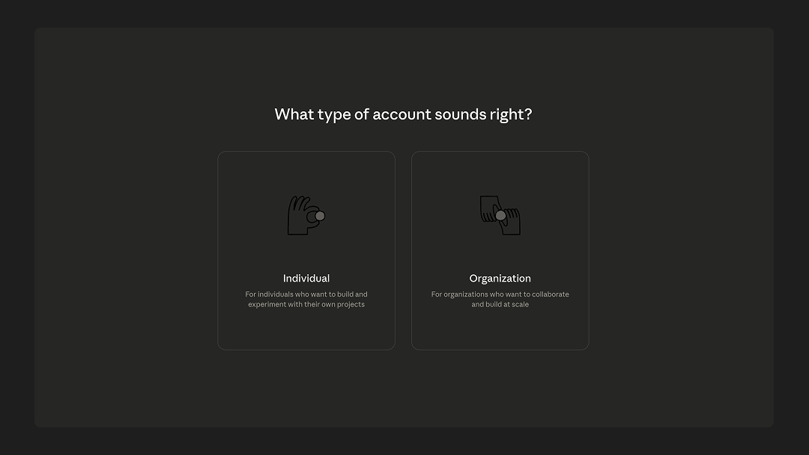
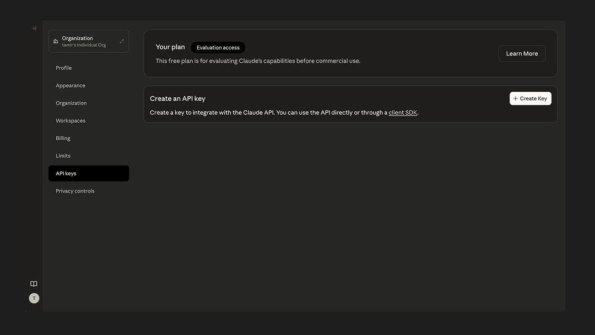
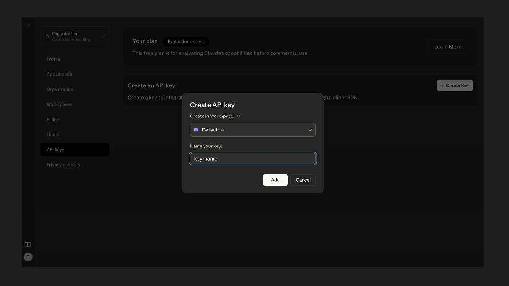
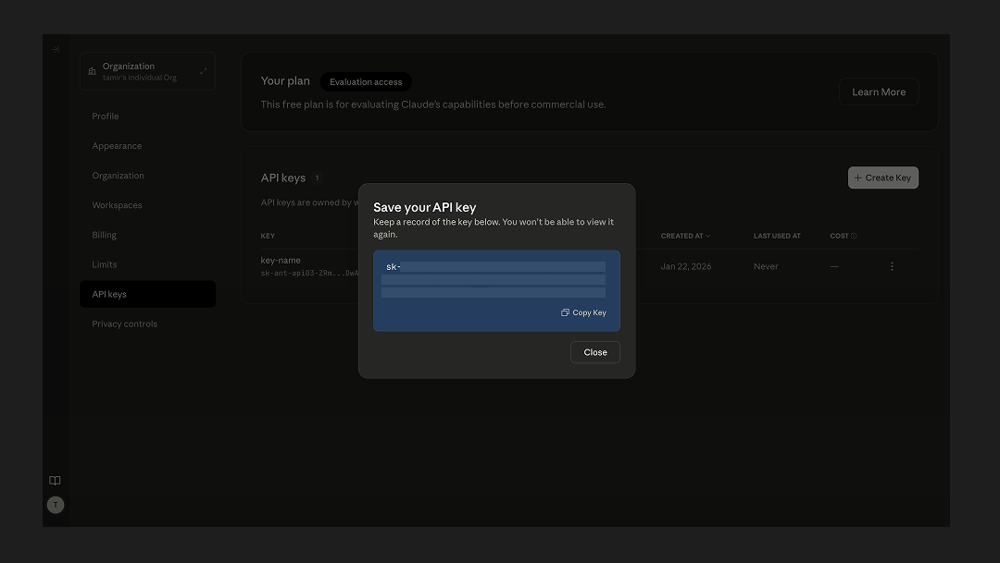
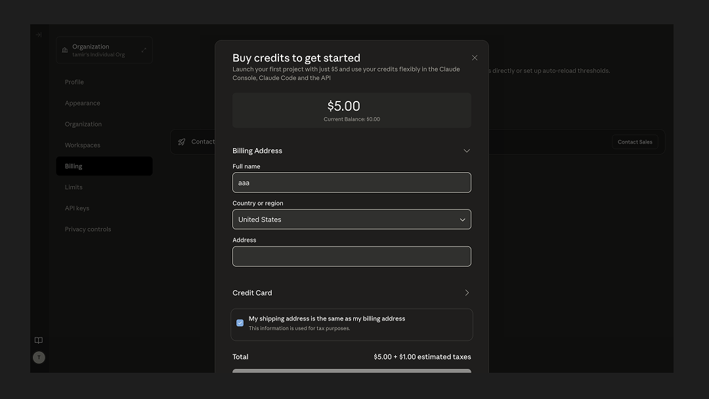

Anthropic API Key
Learn how to obtain your Anthropic API key to use Claude models with Openwork™.
Step 1: Create an Account
Sign up for an account here.
Step 2: Generate an API Key
After creating an account, click your Profile in the top right corner and select API Keys.
On the next screen, click Create Key and type in a name for your key. Hit Create Key after naming your key.
IMPORTANT: Copy your key and store it in a safe location. You won't be able to re-access the key in the future.
Step 3: Set Up Billing
From the same screen in Step 2, select Plans & Billing in the left navigation.
On this screen, you have 2 options:
- If you recently created a new account, you may have credits to test the API without setting up a paid plan. To claim the credits, you'll need to provide your phone number. If you go this route, you can skip the remainder of this guide.
- If you don't have credits, you'll need to upgrade to a paid plan. You can see information about plans if you hit Select Plan.
If you select the Scale plan, you'll be prompted to talk to Anthropic's sales team and the rest of this guide won't apply. For this guide, we'll continue with the Build plan.
After continuing in the flow by selecting Build, you'll be prompted to enter a credit card and purchase an initial amount of credits. You can also set up an auto-reload of credits on this page.
After hitting Purchase Credits, you'll be taken to a dashboard, which you can use to manage your usage and billing going forward.